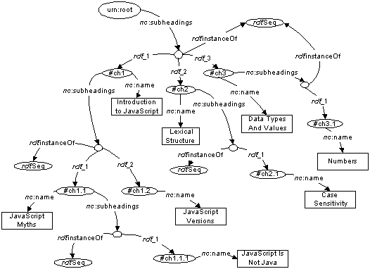

XUL Template Primer - Nested Content
Contents
Overview
Example
The containment attribute
Related Documents
Notes
Overview
This document expands on the
XUL Template Primer
by illustrating how templates can recursively generate nested
content.
Example
To illustrate how nested content is generated, we'll examine this
XUL document,
which builds a simple content model from an RDF/XML file.
<?xml version="1.0"?>
<?xml-stylesheet href="chrome://global/skin" type="text/css"?>
<window xmlns:html="http://www.w3.org/1999/xhtml"
xmlns="http://www.mozilla.org/keymaster/gatekeeper/there.is.only.xul"
align="vertical">
<vbox datasources="toc.rdf" ref="urn:root"
containment="http://home.netscape.com/NC-rdf#subheadings">
<template>
<rule>
<conditions>
<content uri="?uri" />
<triple subject="?uri"
predicate="http://home.netscape.com/NC-rdf#subheadings"
object="?subheadings" />
<member container="?subheadings" child="?subheading" />
</conditions>
<bindings>
<binding subject="?subheading"
predicate="http://home.netscape.com/NC-rdf#name"
object="?name" />
<binding subject="?subheading"
predicate="http://home.netscape.com/NC-rdf#number"
object="?number" />
</bindings>
<action>
<vbox>
<hbox uri="?subheading">
<label value="?name (?number^)" />
</hbox>
</vbox>
</action>
</rule>
</template>
</vbox>
</window>
We'll use the following RDF/XML file,
toc.rdf,
which is a partial Table of Contents from one of my favorite
books.
<?xml version="1.0"?>
<rdf:RDF xmlns:rdf="http://www.w3.org/1999/02/22-rdf-syntax-ns#"
xmlns:nc="http://home.netscape.com/NC-rdf#">
<rdf:Description about="urn:root">
<nc:subheadings>
<rdf:Seq>
<rdf:li>
<rdf:Description ID="ch1" nc:number="1" nc:page="12"
nc:name="Introduction to JavaScript" />
</rdf:li>
<rdf:li>
<rdf:Description ID="ch2" nc:number="2" nc:page="13"
nc:name="Lexical Structure" />
</rdf:li>
<rdf:li>
<rdf:Description ID="ch3" nc:number="3" nc:page="15"
nc:name="Data Types and Values" />
</rdf:li>
</rdf:Seq>
</nc:subheadings>
</rdf:Description>
<rdf:Description about="#ch1">
<nc:subheadings>
<rdf:Seq>
<rdf:li>
<rdf:Description ID="ch1.1" nc:number="1.1" nc:page="16"
nc:name="JavaScript Myths" />
</rdf:li>
<rdf:li>
<rdf:Description ID="ch1.2" nc:number="1.2" nc:page="19"
nc:name="JavaScript Versions" />
</rdf:li>
</rdf:Seq>
</nc:subheadings>
</rdf:Description>
<rdf:Description about="#ch1.1">
<nc:subheadings>
<rdf:Seq>
<rdf:li>
<rdf:Description ID="ch1.1.1" nc:number="1.1.1" nc:page="20"
nc:name="JavaScript Is Not Java" />
</rdf:li>
</rdf:Seq>
</nc:subheadings>
</rdf:Description>
<rdf:Description about="#ch2">
<nc:subheadings>
<rdf:Seq>
<rdf:li>
<rdf:Description ID="ch2.1" nc:number="2.1" nc:page="21"
nc:name="Case Sensitivity" />
</rdf:li>
</rdf:Seq>
</nc:subheadings>
</rdf:Description>
<rdf:Description about="#ch3">
<nc:subheadings>
<rdf:Seq>
<rdf:li>
<rdf:Description ID="ch3.1" nc:number="3.1" nc:page="30"
nc:name="Numbers" />
</rdf:li>
</rdf:Seq>
</nc:subheadings>
</rdf:Description>
</rdf:RDF>
This RDF/XML creates the following model
(the nc:number and nc:page
properties have been left of for clarity's sake).

When thrown together in Mozilla, the following appears:

The containment attribute
The template's root node specifies how container
membership is indicated using the containment
attribute.
<vbox datasources="toc.rdf" ref="urn:root"
containment="http://home.netscape.com/NC-rdf#subheadings">
...
</vbox>
This attribute is a whitespace-separated list of RDF properties
that indicate container membership in the RDF model.
-
XUL Template Primer
-
XUL template basics.
-
XUL Template Primer - Bindings
-
Illustrates how to use the
<bindings> tag in
your XUL templates.
-
XUL Template Primer - Multiple Rules
-
Illustrates how to write templates with multiple
<rule> elements.
-
XUL Template Primer - Outliner
-
Illustrates how a template can be used as a view for a XUL
outliner.
-
XUL Template Reference
-
Describes the simple XUL template syntax in detail.
Notes